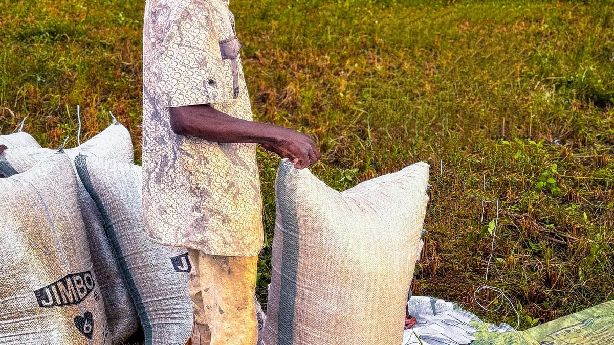
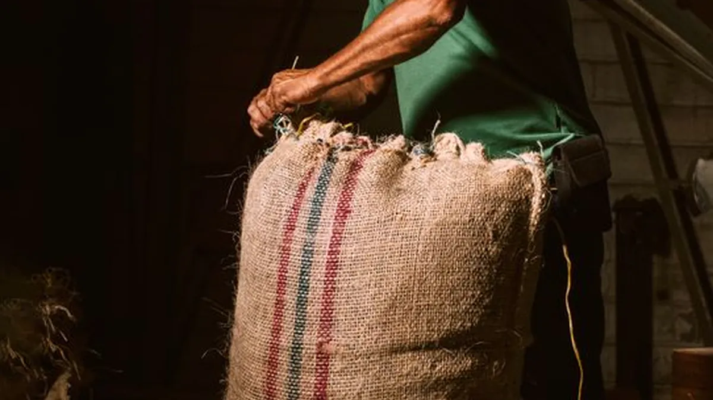
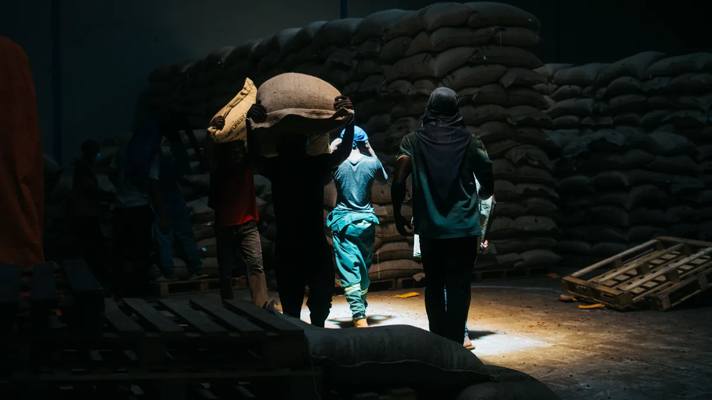
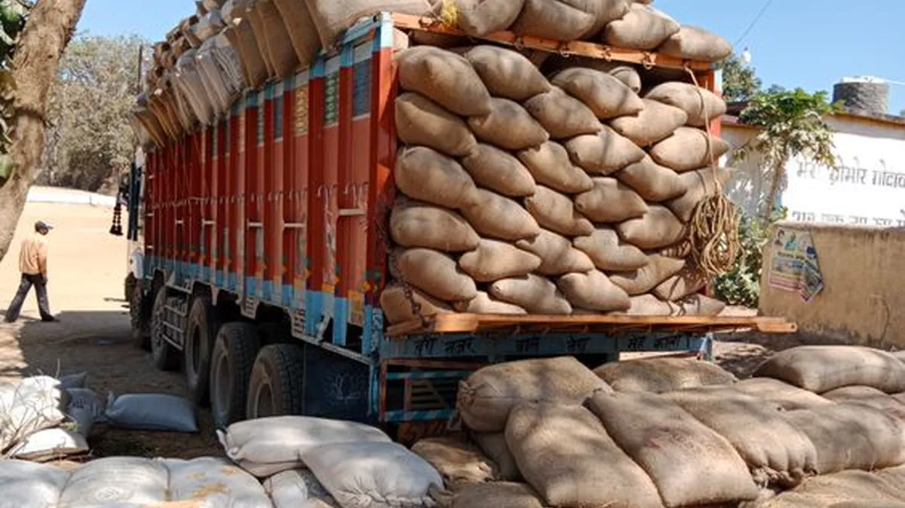
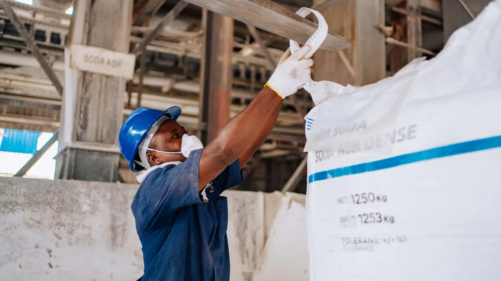

Où voulez-vous travailler ?
Choisissez un domaine métier. Chaque image représente le travail réel derrière le module, tout en gardant une seule expérience ANAGROCI Operations.

FIELD BUYING
Producteurs, Farmer Passport, RT, Achat Bord Champ, sacherie AFLP, caisse et opérations terrain.
Ouvrir le workspace
LBA PURCHASE
LBA Registry, limites de financement, financements, achats RCN, livraisons et sacherie.
Ouvrir le workspace
WAREHOUSE OPERATIONS
Réceptions, qualité, lots RCN, BIN, stock, drying/sorting, inventaires et sacherie.
Ouvrir le workspace
STOCK TRANSFER
Chargement, transit, arrivée, réception et réconciliation des transferts de stock.
Ouvrir le workspace
FACTORY
Factory Reception, Factory Warehouse, Factory BIN, processing, calibration et bilan matière.
Ouvrir le workspaceTRACEABILITY 360
Suivre Farmer, LBA, Lot, BIN, camion, transfert et usine dans une même chaîne opérationnelle.
Cross-module →REPORTS & EXPORT
Dashboards, analyses, filtres et exports Excel pour le pilotage des opérations.
Ouvrir →